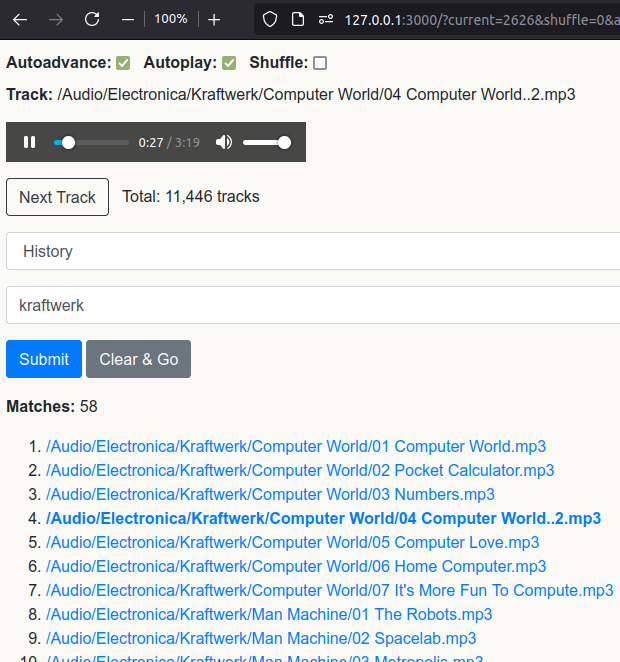
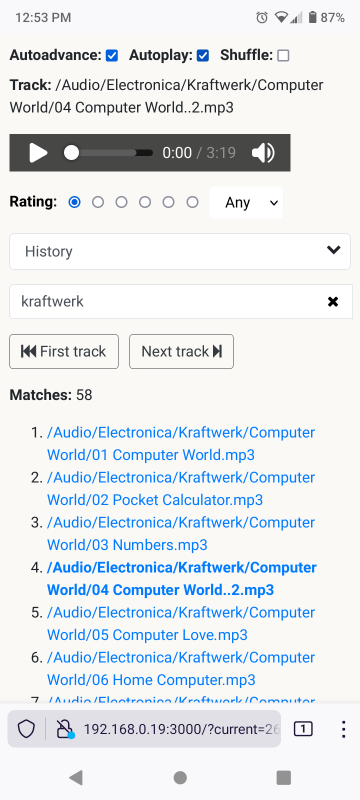

Mojolicious Music Player
Can you build an audio player from perl Mojolicious? Yes!
tl;dr: audio-player
I have an external drive with 30+ straight days of music, and have two desires: 1) To be able to play through this library in "shuffle" mode, returning a random tune each time. And 2) to be able to search for arbitrary keywords.
So, yes, there are plenty of full-featured audio players out there. VLC for instance. But none written by me. Haha. Also, it has the advantages of being super lightweight and playable from any machine on the network too.

Let's get to it. There are two parts: The code and the audio library itself. The audio library goes under a subdirectory named "public". In my case, my audio files are on an external drive. So do these steps:
git clone https://github.com/ology/audio-player
cd audio-player
cd public
ln -s /media/gene/External/Music/ Audio/ # But with your folder
cd ..
morbo audio-player
# Now visit the app refresh endpoint with any browser
curl http://127.0.0.1:3000/refresh
Now for the code. First up, declare the libraries of functionality to use:
use Encoding::FixLatin qw(fix_latin);
use File::Find::Rule ();
use List::SomeUtils qw(first_index);
use Mojolicious::Lite -signatures;
use Mojo::Util qw(url_escape url_unescape);
use Number::Format ();
use Storable qw(retrieve store);
Encoding::FixLatin "makes a best effort to convert [funky encodings] to UTF-8." File::Find::Rule recursively gathers all interesting files. The List::SomeUtils first_index function locates a track in the search matches. Mojolicious::Lite is the web framework upon which this program is based. Number::Format just puts a comma in the total number of tracks that is displayed. Storable saves and retrieves the file of tracks that is used to actually locate the audio.
Next, the physical locations of the audio are defined:
use constant PATH => 'public/Audio/'; # Where the audio files live
use constant DAT => "$0.dat"; # The tracks file
Now for the first Mojolicious::Lite endpoint:
get '/' => sub ($c) {
my $autoadvance = $c->param('autoadvance') || 0;
my $autoplay = $c->param('autoplay') || 0;
my $current = $c->param('current') || 0;
my $noinc = $c->param('noinc') || 0;
my $shuffle = $c->param('shuffle') || 0;
my $query = $c->param('query') || '';
my $submit = $c->param('submit') || '';
This says, "When '/' is visited, capture a half-dozen parameters." These parameters determine the behavior of the program.
my $audio = []; # Bucket for all tracks
my $match = []; # Bucket for all matches if given a query
A couple buckets are declared to hold the audio that is found. And the first is set to the tracks file, declared above. (And if a tracks file can't be found, a warning message is flashed to the user.)
if (-e DAT) {
$audio = retrieve(DAT);
}
else {
$c->flash(error => "Can't read track list file");
}
Now if there is a query parameter provided to the endpoint, brute force through every track, looking for matches between the track name and the query:
if ($query) {
# Convert encoded things like & back into &
$query = url_unescape($query);
for my $n (0 .. $#$audio) {
push @$match, $n if lc($audio->[$n]) =~ /$query/i;
}
The index of the current item of the search results is needed in order to properly increment. Also, if the current item cannot be found, the first match is used.
my $idx = first_index { $_ == $current } @$match;
$idx = 0 if $idx == -1;
Then if shuffling, get a random member of the matches. Otherwise increment the track - unless we are told not to with the noinc flag:
$current = $shuffle
? $match->[int rand @$match]
: $noinc
? $match->[$idx]
: $match->[$idx + 1];
}
If there is no query and shuffling is called for, get a random audio track index from the complete library of audio. Otherwise increment, unless we are told not to:
else {
$current = $shuffle ? int(rand @$audio) : $noinc ? $current : $current + 1;
}
As promised, we re-format the total number, and query matched tracks to have a thousands separator comma:
my $nf = Number::Format->new;
my $total = $nf->format_number(scalar @$audio);
my $matches = $nf->format_number(scalar @$match);
Normally a track is selected next. But when a search query has been freshly submitted, do not select a track to display. Also, handle the case where there is no current track to display:
my $track = $submit || !$current ? '' : $audio->[$current];
$track ||= '';
For this main endpoint, pass the interesting variables to the template (named "index") for rendering on the web:
$c->render(
template => 'index',
total => $total,
audio => $audio,
track => $track,
autoplay => $autoplay,
autoadvance => $autoadvance,
current => $current,
shuffle => $shuffle,
query => $query,
match => $match,
matches => $matches,
submit => $submit ? 1 : 0,
);
Give the endpoint a name, so that it can be referred to in the code and template:
} => 'index';
Now for the second Mojolicious::Lite endpoint, whose intention is to recreate the track list:
get '/refresh' => sub ($c) {
First, gather all the interesting files for the track list:
my @files = File::Find::Rule->file()
->name('*.mp3', '*.m4a')
->in(PATH);
And remove "public" from the filename, since that is part of the underlying framework itself:
for my $file (@files) {
$file =~ s/^public//;
}
Next, save the files to disk:
store \@files, DAT;
Lastly, redirect back to the main page:
$c->redirect_to($c->url_for('index'));
But name the endpoint for good measure:
} => 'refresh';
Finally, start the application:
app->start;
Pretty simple so far!
Next up is the single, but complex template full of Mojolicious and JavaScript things. Unfortunately my Mojolicious based blog engine, Statocles tries to interpolate any template examples I show here! So I will leave understanding that part up to the reader!
Anyway, to start this program, just run the Mojolicious included development server, "morbo":
audio-player $ morbo audio-player
And browse to http://127.0.0.1:3000/refresh - Voila!
~
UPDATE:
The program audio-player2, in the same repository directory, is the evolution of the above implementation, with track ratings and smoother interface/behavior.

(And the astute observer will notice the low rating for this classic Kraftwerk song. But that is the rating for zero = no rating. Meaning that I just hadn't given it a top rating yet. But that is now fixed. :))